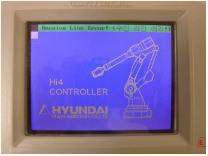
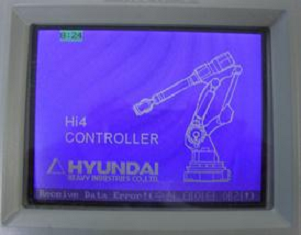
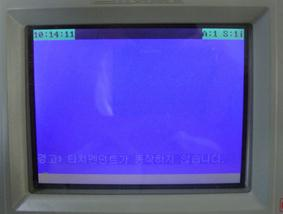
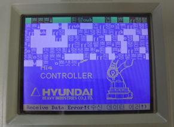
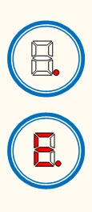
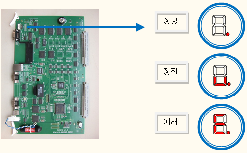
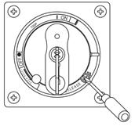
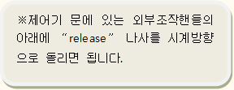

주의(Caution)
열려있는 제어기는 메인보드의 상태만을 확인하시고, 안전을 위하여 절대로 다른 것은 만지지 마십시오.
메인보드가 정상 상태임을 확인한 뒤에는 반드시 닫아주시기 바랍니다.
7.1. 개요
메인보드(BD412)와 티칭펜던트(TP300)간 통신이 끊어진 경우 발생하는 에러이며, 이는 데이터의 송신 시 또는 수신 시 발생한 에러 메시지를 달리 표현함으로써 메인보드와 티칭펜던트의 원인을 구분하여 화면에 표시한다.
7.2. 원인 및 점검방법
1. 다음의 기본적인 내용을 확인하십시오.
메인보드와 티칭펜던트 간 연결 Line이 정상인지를 확인하기 위함입니다.
1) SMPS의 DC24V 출력 전압
2) CNRTP 커넥터 : E,F (DC24V) – G,H (GND) 간 전압
3) CNRTP 커넥터의 체결 상태
4) TP Cable 손상 여부 점검
2. 통신 Line 이상
“Receive Line Error! (수신 라인 에러!)” & 메인보드의 7-Seg. à [E.]

TP의 초기 화면이 상기 그림과 같을 때
▶ 원인
: TP Cable의 Receive Data Line 계통의 단선 → [CNTP] pin(A, B)
▶ 대책
(1) TP Cable을 교체하십시오. 동일 현상 발생 시 TP300을 교체하십시오.
(2) 동일 현상 발생 시 메인보드를 교체하십시오.
(3) 동일 현상이 계속될 경우 당사 AS팀에 연락바랍니다.
“Receive Data Error! (수신 데이터 에러)” & 메인보드의 7-Seg. à [E.]

또는
경고) 티치펜던트가 동작하지 않습니다.” & 메인보드의 7-Seg. : [.]

TP의 초기 화면이 상기 그림과 같을 때
▶ 원인
- TP Cable의 Transmit Data Line 계통의 단선 → [CNTP] pin(C, D)
- 메인보드의 Receive Data 이상 시
▶ 대책
(1) TP Cable을 교체하십시오. 동일 현상 발생 시 TP300을 교체하십시오.
(2) 동일 현상 발생 시 메인보드를 교체하십시오.
(3) 동일 현상이 계속될 경우 당사 AS팀에 연락바랍니다.
“Receive Data Error! (수신 데이터 에러!)” & 메인보드의 7-Seg. à [.] or [E.]

TP의 초기 화면이 상기 그림과 같을 때
▶ 원인
- TP Cable의 Rx/Tx Data Line 계통의 결선 불량 → [CNTP] pin(A, B, C, D)
- 메인보드의 Transmit Data 이상 시
▶ 대책
(1) TP Cable을 교체하십시오. 동일 현상 발생 시 TP300을 교체하십시오.
(2) 동일 현상 발생 시 메인보드를 교체하십시오.
(3) 동일 현상이 계속될 경우 당사 AS팀에 연락바랍니다.
l 참조: 메인보드의 7-Segment

전원이 투입된 상태에서 제어기 문이 닫혀있을 경우에는 문을 열고 확인하도록 하며, 문을 여는 방법은 다음 그림을 참조하십시오.
|  |  |
|
|
주의(Caution) 열려있는 제어기는 메인보드의 상태만을 확인하시고, 안전을 위하여 절대로 다른 것은 만지지 마십시오. 메인보드가 정상 상태임을 확인한 뒤에는 반드시 닫아주시기 바랍니다.
|